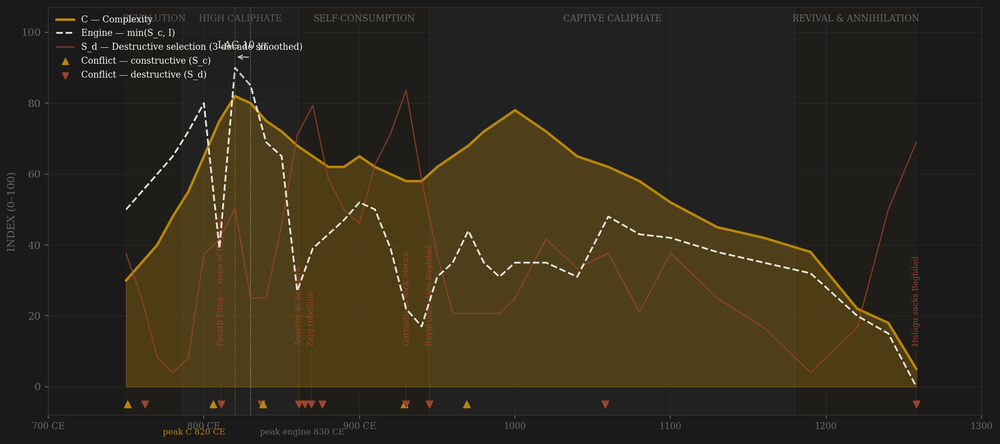
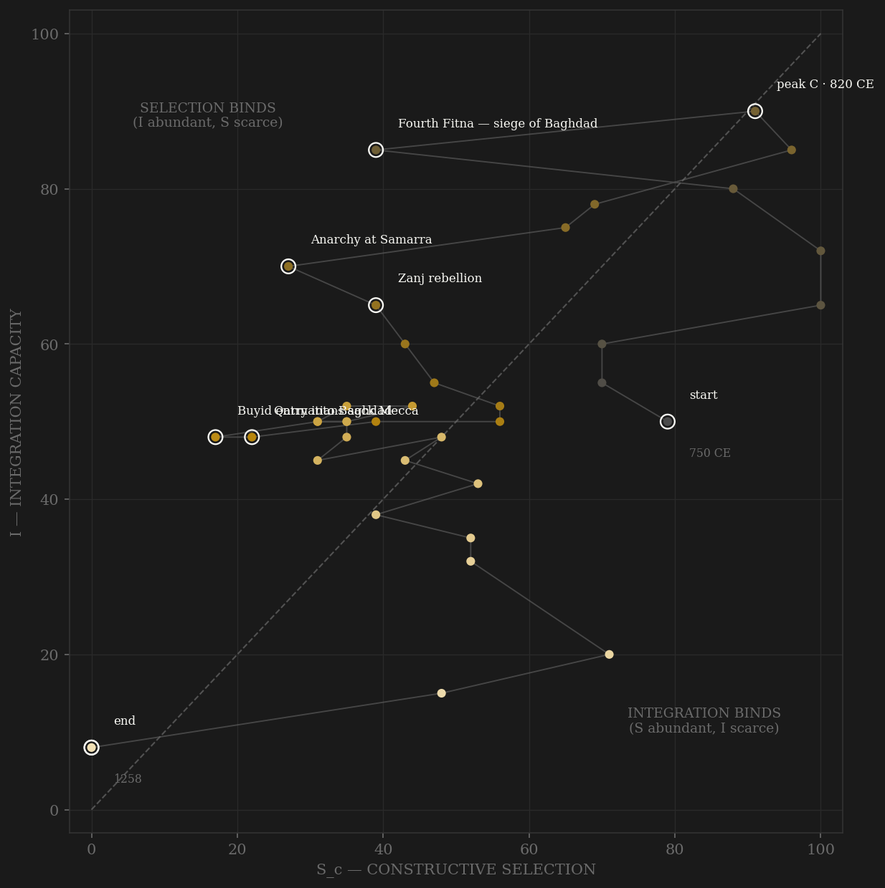

The Abbasid arc is the cleanest demonstration in the sample of why gross selection pressure cannot be trusted: at face value the engine peaked in the 860s — the exact decade Turkish soldiers were murdering caliphs in Samarra — and returned a lag of -40, FAIL. Decomposed by locus, the picture inverts. Constructive pressure peaks in the 790s–800s: Harun al-Rashid's annual Byzantine campaigns, the 806 expedition that put 135,000 men on Anatolian soil and made an emperor tributary, the organized frontier of al-'Awasim. Integration crests just behind it — the Translation Movement at 120-plus works a decade, eight trade routes converging on a city of seven hundred thousand. Complexity peaks in the 820s under al-Ma'mun, thirty years after the engine: al-Khwarizmi's algebra, the House of Wisdom, the densest concentration of new science the world had yet seen. Then the state begins consuming its own coordination machinery — Samarra, the Zanj, the Qarmatians, the Buyids — and the extraordinary thing is how slowly complexity dies: scholars kept producing under decentralized patronage for two centuries after the caliph became a figurehead. The 1258 tick is not a fall; it is a demolition of something already hollow.

The trajectory enters mid-plot — a revolutionary state born with high contest and moderate coordination — and climbs the integration axis through the reigns of al-Mansur and Harun, crossing into the selection-binds region where it spends its golden age: after 810 the caliphate never again lacked coordination relative to disciplining pressure; it lacked pressure of the constructive kind. From the 860s the path walks down both axes at once, a staircase of self-inflicted subtractions — Samarra, Zanj, Qarmatian, Buyid — each step lower on I, none recovering. The long Buyid-Seljuk shelf (940s–1190s) shows the trajectory loitering in the lower-left: a ceremonial state, coordination outsourced to its captors. The terminal drop is vertical: the al-Nasir revival lifts S_c briefly without rebuilding I, and the path dies pinned against the origin — the only polity in the sample to end with both axes near zero, because in 1258 the machinery and the city that housed it were physically erased.
Coded by locus and target, never by outcome. The Abbasid ledger is dominated by destructive selection to a degree no other polity matches — ten of sixteen entries strike the caliphate's own coordination machinery, and the worst of them come in an unbroken forty-year chain (861–902) while the frontier stood quiet. The hard cases cut both ways: Peroz-style frontier catastrophes are absent, but the Qarmatian raids are coded S_d despite being 'external' to Baghdad's government, because they penetrated the core — Basra, Kufa, the hajj roads, Mecca itself — exactly the Alaric rule. Conversely the Mongol annihilation of Khwarezm in the 1220s is S_c: extreme external pressure on the frontier of a core that still held. Thirty-eight years later the same force arrived at the walls, and the code flips — 1258 is S_d by locus, the terminal demolition of the machinery, external origin notwithstanding.
| YEAR | CONFLICT | CODE | CODING RATIONALE |
|---|---|---|---|
| 751 CE | Battle of Talas | Sc | Peer contest with Tang China at the empire's far edge; core untouched |
| 762 CE | Revolt of al-Nafs al-Zakiyya | Sd | Alid rising in Medina and Basra against the new dynasty's legitimacy — internal war on the machinery |
| 806 CE | Harun's Anatolian expedition | Sc | 135,000 men, Heraclea taken, Nikephoros tributary — peak frontier discipline, the constructive maximum |
| 811 CE | Fourth Fitna — siege of Baghdad | Sd | al-Amin vs al-Ma'mun; the capital besieged a year, the caliph executed — civil war at the exact center |
| 837 CE | Babak's Khurramite war crushed | Sd | Twenty-year internal insurgency in Azerbaijan consuming imperial armies |
| 838 CE | Amorium campaign | Sc | al-Mu'tasim's deepest strike into Anatolia; external peer war while the core held |
| 861 CE | Anarchy at Samarra | Sd | The guard murders al-Mutawakkil; four caliphs in nine years; Turkish factions war in the capital — destructive selection in its purest form |
| 865 CE | Second siege of Baghdad | Sd | al-Musta'in vs al-Mu'tazz — the Samarra factions fight a full civil war for the old capital |
| 869 CE | Zanj rebellion | Sd | Fourteen years of slave war in the southern floodplain; Basra sacked 871; the fiscal heartland devastated |
| 876 CE | Dayr al-'Aqul | Sd | Saffarid Ya'qub's march on Baghdad stopped eight miles from the city — a provincial army aimed at the throne |
| 929 CE | Cordoba declares rival caliphate | Sc | Umayyad Spain claims the universal title — ideological peer contest waged at a distance |
| 930 CE | Qarmatians sack Mecca | Sd | Basra 923, Kufa 925–927, then the Black Stone carried off — 'external' raiders penetrating the ritual and economic core: the Alaric rule |
| 945 CE | Buyid entry into Baghdad | Sd | Ahmad ibn Buya takes the capital; al-Mustakfi deposed and blinded within a year — the machinery captured whole |
| 969 CE | Byzantine resurgence & Fatimid Egypt | Sc | Antioch falls to Nikephoros Phokas, Cairo to the Fatimids — two peers pressing a core that, however diminished, still held |
| 1058 | al-Basasiri seizes Baghdad | Sd | Fatimid-backed general drives caliph al-Qa'im from his capital; the khutba read for Cairo — coordination decapitated |
| 1258 | Hulagu sacks Baghdad | Sd | Five-week siege, al-Musta'sim trampled, House of Wisdom burned — external origin, terminal core-destroying locus |
| COMPONENT | GRADE | BASIS |
|---|---|---|
| S — Selection (gross) | ○ scholar-coded | Decade ordinals from Kennedy (2004) The Prophet and the Age of the Caliphates; Hodgson (1974); El-Hibri (2021). Contaminated by S_d at Samarra — face-value engine peaked 860s, lag -40 FAIL |
| S_c / S_d — decomposed (v1, frozen) | ○ scholar-coded | Locus-and-target recoding of every row, 0–10 ordinals → 0–100 within dynasty; per-decade rationales in coding_ledger.csv; succession-violence file (violent rate 0.7 in 861–945 vs 0.3 before) sanity-anchors the S_d chronology. Kept as Sc_v1_combat per the v2 amendment |
| S_c v2 — contestability composite | ○ scholar-coded | 0.40 elite-entry (translation-movement patronage market per Gutas 1998; kuttab→madrasa ladder, Nizamiyya 1065/Mustansiriyya 1234; Barmakid-era vizierate+katib openness; mawali advancement — the revolution's core promise, Hodgson 1974; pre-Samarra ghilman meritocracy, Kennedy 2001) + 0.30 external rivalry (HARD CAP; the v1 locus-cleaned war ordinal) + 0.30 within-rules political competition (vizierate alternation pre-945, Banu'l-Furat vs Banu'l-Jarrah; kalam disputation). Default 0.4/0.3/0.3 weights, no deviation. Rationales in coding_ledger_v2.csv |
| I — Integration | ○ coded + counts | Translation-movement volumes per Gutas (1998) reconstruction; trade-route and Hajj integration coded from Kennedy, Chaudhuri; not independently measured |
| C — Complexity | ○ coded + counts | 'Major works' per decade from Saliba (2007), Dallal (2010), DSB scholar counts — a subjective census; Baghdad population per Chandler; Maddison regional GDPpc too sparse pre-1500 to carry C |
| R — Renewal | ○ estimates | McEvedy & Jones caliphate population, millions; no census tradition — rough anchors only |
| E — Entropy | ○ scholar-coded | Institutional-decay ordinals: tax farming, iqta spread, caliphal authority; Kennedy (2004) |
37 rows, 750–1258 (decade grid to 1000, then 20–30yr bins — peak resolution correspondingly coarser late). Gross S_selection preserved unchanged from the original build; Sc/Sd added 2026-07-06 by locus-and-target recoding after the face-value engine peaked in the 860s Samarra anarchy (lag -40 FAIL) — the same gross-series contamination found in Rome's wars-per-decade. S_c v2 AMENDMENT (2026-07-06, AMENDMENT_S_definition_v2.md): Sc_constructive is now the contestability composite (0.40 elite-entry + 0.30 external-rivalry hard cap + 0.30 within-rules politics); the combat series is frozen as Sc_v1_combat. Frozen-protocol lags (3-decade centered rolling mean, engine min(S_c,I)) under BOTH definitions: v1 combat — engine 790s, C 820s, lag +30 PASS; v2 contestability — engine 830s (al-Ma'mun's House-of-Wisdom patronage peak), C 820s, lag −10 SIMULTANEOUS. VERDICT FLIP shown, not hidden: under v2 the engine and C crest together on the al-Ma'mun plateau — at this grid the caliphate's contest machine and its complexity peak are indistinguishable in time. All codings ○ scholar-coded ordinals; audit trail in coding_ledger.csv (v1/Sd) and coding_ledger_v2.csv (channels A/B/C). Rebuild: build_abbasid_sicre.py, then polity_report.py --slug abbasid